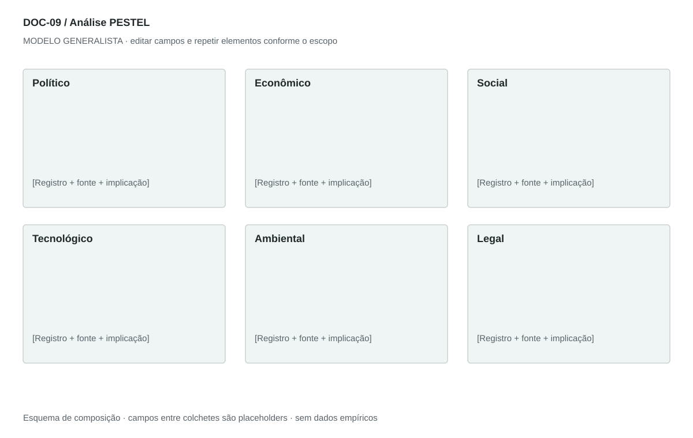

DOC-09 / Biblioteca documental generalista
Análise PESTEL
Examinar fatores externos que podem alterar demanda, custos, operação e decisões em um território e horizonte definidos.
Modelo de investigação. Não representa uma análise concluída. Campos vazios devem permanecer identificados; não inventar dados para completar figuras.
Estrutura editorial
2–4 páginas retrato + quadro-síntese paisagem. Cabeçalho com território, data-base e horizonte. Dimensões com mecanismo, implicação, sinal e resposta.
Visual previsto

Seis cartões com fator, mecanismo e sinal de monitoramento. Matriz impacto × incerteza opcional com rubrica explícita; não usar radar com notas arbitrárias.
Imagens: Seis ícones simples opcionais; evitar bandeiras e mapas como substitutos de dados. Série temporal só com unidade, período e fontes reais.
Dicionário de dados
| Campo | Tipo | Dado necessário |
|---|
| dimensao | enum | politico, economico, social, tecnologico, ambiental ou legal |
| fator | texto | Mudança externa específica |
| territorio | texto | Geografia à qual o fator se aplica |
| horizonte | texto | Prazo em que pode produzir efeito |
| mecanismo | texto | Como o fator afeta o negócio |
| direcao | enum | oportunidade, ameaca, mista ou indeterminada |
| impacto | enum | baixo, medio, alto ou desconhecido, segundo rubrica |
| sinal | texto | Indicador que aciona revisão |
| resposta | texto | Ação ou investigação proporcional |
Todos os registros precisam de classificação, fonte, localização, datas, confiança e limitação. Números também precisam de unidade, moeda quando aplicável e período.
Modelo preenchível
Os quadros amarelos podem ser editados nesta página para impressão. Edições não são gravadas automaticamente: use o Markdown/JSON para manter uma versão ou imprima em PDF após editar.
[Negócio] · [Versão] · [Data-base] · [Autor] · [Audiência] · [Território]
Pergunta decisória: [A preencher]
Escopo: [A preencher]
1. Recorte e fontes
Território, setor, período, fontes e lacunas.
[Análise + evidência + implicação + lacuna]
2. Político
Políticas, estabilidade e prioridades públicas pertinentes; explicar mecanismo de impacto.
[Análise + evidência + implicação + lacuna]
3. Econômico
Renda, custos, crédito, preços e condições de demanda pertinentes.
[Análise + evidência + implicação + lacuna]
4. Social
Hábitos, expectativas e acesso com evidência contextual, sem estereótipos.
[Análise + evidência + implicação + lacuna]
5. Tecnológico
Alternativas, maturidade, dependências e mudanças de custo/desempenho.
[Análise + evidência + implicação + lacuna]
6. Ambiental
Uso de recursos, resíduos, exposição física e restrições pertinentes.
[Análise + evidência + implicação + lacuna]
7. Legal
Requisitos a verificar por jurisdição, vigência e aplicabilidade.
[Análise + evidência + implicação + lacuna]
8. Síntese e monitoramento
Prioridades, sinais de mudança, responsável e data de revisão.
[Análise + evidência + implicação + lacuna]
Decisão e próximo passo
[Decisão e justificativa]
[Alternativa considerada]
[Condição de reversão]
[Ação, responsável, prazo e critério]
Fontes e limites
[Fonte + localização + datas + o que sustenta + limitações]
Critérios de revisão
- Cada fator tem território, data e fonte ou rótulo de hipótese.
- Político e legal não duplicam o mesmo argumento sem explicar perspectivas.
- Nenhuma regra legal do caso-fonte é herdada.
Estudo do arquivo original
DOC-08-fonte.pdf — Três páginas retrato; pequeno ícone circular de seis fatores no início e listas numeradas por dimensão. Cada bullet começa com assunto em negrito e termina na implicação. A terceira página contém apenas continuação da dimensão legal. Não há escala consistente de impacto nem registro individual de fontes.
Observação do original e adaptação recomendada são camadas distintas. Nomes, preços, localidades, contatos e conclusões do caso-fonte não devem preencher a nova análise.